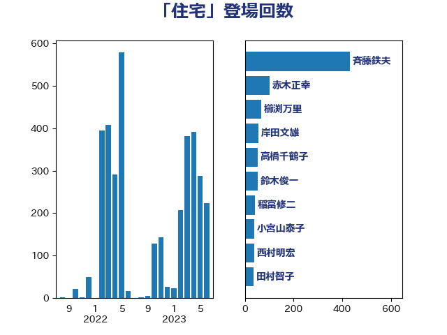

単語「住宅」

| 斉藤鉄夫 | 公明党 | 431 回 |
| 赤木正幸 | 日本維新の会 | 103 回 |
| 櫛渕万里 | れいわ新選組 | 68 回 |
| 岸田文雄 | 自由民主党 | 55 回 |
| 高橋千鶴子 | 日本共産党 | 53 回 |
| 鈴木俊一 | 自由民主党 | 52 回 |
| 稲富修二 | 立憲民主党 | 42 回 |
| 小宮山泰子 | 立憲民主党 | 40 回 |
| 西村明宏 | 自由民主党 | 38 回 |
| 田村智子 | 日本共産党 | 37 回 |
| 古川元久 | 国民民主党 | 30 回 |
| 岩渕友 | 日本共産党 | 29 回 |
| 西銘恒三郎 | 自由民主党 | 27 回 |
| 西村康稔 | 自由民主党 | 27 回 |
| 木村英子 | れいわ新選組 | 27 回 |
| 末次精一 | 立憲民主党 | 26 回 |
| 小野泰輔 | 日本維新の会 | 25 回 |
| 嘉田由紀子 | 無所属 | 25 回 |
| 枝野幸男 | 立憲民主党 | 24 回 |
| 竹内真二 | 公明党 | 23 回 |
| 田嶋要 | 立憲民主党 | 23 回 |
| 前川清成 | 日本維新の会 | 23 回 |
| 伊藤渉 | 公明党 | 23 回 |
| 塩田博昭 | 公明党 | 22 回 |
| 中川康洋 | 公明党 | 22 回 |
| 萩生田光一 | 自由民主党 | 21 回 |
| 金子俊平 | 自由民主党 | 20 回 |
| 足立敏之 | 自由民主党 | 18 回 |
| 中根一幸 | 自由民主党 | 18 回 |
| 高木陽介 | 公明党 | 17 回 |
| 足立康史 | 日本維新の会 | 17 回 |
| 芳賀道也 | 国民民主党 | 17 回 |
| 浜口誠 | 国民民主党 | 17 回 |
| 豊田俊郎 | 自由民主党 | 16 回 |
| 西岡秀子 | 国民民主党 | 16 回 |
| 宮崎勝 | 公明党 | 16 回 |
| 福田昭夫 | 立憲民主党 | 15 回 |
| 木原稔 | 自由民主党 | 15 回 |
| 寺田静 | 無所属 | 15 回 |
| 石井苗子 | 日本維新の会 | 14 回 |
| 津島淳 | 自由民主党 | 14 回 |
| 河西宏一 | 公明党 | 14 回 |
| 水岡俊一 | 立憲民主党 | 14 回 |
| 一谷勇一郎 | 日本維新の会 | 13 回 |
| 高橋光男 | 公明党 | 12 回 |
| 青木愛 | 立憲民主党 | 12 回 |
| 田所嘉徳 | 自由民主党 | 12 回 |
| 熊谷裕人 | 立憲民主党 | 12 回 |
| おおつき紅葉 | 立憲民主党 | 12 回 |
| 金子恭之 | 自由民主党 | 11 回 |
| 福島伸享 | 無所属 | 11 回 |
| 岡本あき子 | 立憲民主党 | 11 回 |
| 山口那津男 | 公明党 | 11 回 |
| 宮本徹 | 日本共産党 | 11 回 |
| 大家敏志 | 自由民主党 | 11 回 |
| 古賀之士 | 立憲民主党 | 11 回 |
| 中川宏昌 | 公明党 | 11 回 |
| 鈴木敦 | 国民民主党 | 10 回 |
| 石井啓一 | 公明党 | 10 回 |
| 矢倉克夫 | 公明党 | 10 回 |
| 田村貴昭 | 日本共産党 | 10 回 |
| 森田俊和 | 立憲民主党 | 10 回 |
| 東徹 | 日本維新の会 | 10 回 |
| 杉久武 | 公明党 | 10 回 |
| 山田美樹 | 自由民主党 | 10 回 |
| 小寺裕雄 | 自由民主党 | 10 回 |
| 和田政宗 | 自由民主党 | 10 回 |
| 長妻昭 | 立憲民主党 | 9 回 |
| 福山哲郎 | 立憲民主党 | 9 回 |
| 神津たけし | 立憲民主党 | 9 回 |
| 田中英之 | 自由民主党 | 9 回 |
| 清水貴之 | 日本維新の会 | 9 回 |
| 岡田直樹 | 自由民主党 | 9 回 |
| 山本香苗 | 公明党 | 9 回 |
| 小熊慎司 | 立憲民主党 | 9 回 |
| 小倉將信 | 自由民主党 | 9 回 |
| 高橋英明 | 日本維新の会 | 8 回 |
| 赤羽一嘉 | 公明党 | 8 回 |
| 漆間譲司 | 日本維新の会 | 8 回 |
| 渡辺博道 | 自由民主党 | 8 回 |
| 渡辺創 | 立憲民主党 | 8 回 |
| 柿沢未途 | 無所属 | 8 回 |
| 柳ヶ瀬裕文 | 日本維新の会 | 8 回 |
| 三上えり | 立憲民主党 | 8 回 |
| 谷公一 | 自由民主党 | 7 回 |
| 秋葉賢也 | 自由民主党 | 7 回 |
| 田中健 | 国民民主党 | 7 回 |
| 根本匠 | 自由民主党 | 7 回 |
| 岩田和親 | 自由民主党 | 7 回 |
| 小林茂樹 | 自由民主党 | 7 回 |
| 加藤勝信 | 自由民主党 | 7 回 |
| 伊藤俊輔 | 立憲民主党 | 7 回 |
| 赤嶺政賢 | 日本共産党 | 6 回 |
| 藤巻健太 | 日本維新の会 | 6 回 |
| 笠井亮 | 日本共産党 | 6 回 |
| 永井学 | 自由民主党 | 6 回 |
| 後藤茂之 | 自由民主党 | 6 回 |
| 岩谷良平 | 日本維新の会 | 6 回 |
| 山添拓 | 日本共産党 | 6 回 |
| 山口壯 | 自由民主党 | 6 回 |
| 山口俊一 | 自由民主党 | 6 回 |
| 務台俊介 | 自由民主党 | 6 回 |
| 須藤元気 | 無所属 | 5 回 |
| 鈴木義弘 | 国民民主党 | 5 回 |
| 金城泰邦 | 公明党 | 5 回 |
| 近藤昭一 | 立憲民主党 | 5 回 |
| 谷田川元 | 立憲民主党 | 5 回 |
| 衛藤晟一 | 自由民主党 | 5 回 |
| 羽田次郎 | 立憲民主党 | 5 回 |
| 石井正弘 | 自由民主党 | 5 回 |
| 泉健太 | 立憲民主党 | 5 回 |
| 江藤拓 | 自由民主党 | 5 回 |
| 柴田巧 | 日本維新の会 | 5 回 |
| 末松義規 | 立憲民主党 | 5 回 |
| 早稲田ゆき | 立憲民主党 | 5 回 |
| 庄子賢一 | 公明党 | 5 回 |
| 市村浩一郎 | 日本維新の会 | 5 回 |
| 山崎誠 | 立憲民主党 | 5 回 |
| 宮本岳志 | 日本共産党 | 5 回 |
| 和田義明 | 自由民主党 | 5 回 |
| 伊東信久 | 日本維新の会 | 5 回 |
| 中山展宏 | 自由民主党 | 5 回 |
| 下野六太 | 公明党 | 5 回 |
| 下条みつ | 立憲民主党 | 5 回 |
| 青島健太 | 日本維新の会 | 4 回 |
| 阿部司 | 日本維新の会 | 4 回 |
| 長友慎治 | 国民民主党 | 4 回 |
| 野田聖子 | 自由民主党 | 4 回 |
| 野田国義 | 立憲民主党 | 4 回 |
| 竹内譲 | 公明党 | 4 回 |
| 空本誠喜 | 日本維新の会 | 4 回 |
| 深澤陽一 | 自由民主党 | 4 回 |
| 柘植芳文 | 自由民主党 | 4 回 |
| 松野明美 | 日本維新の会 | 4 回 |
| 松本剛明 | 自由民主党 | 4 回 |
| 新妻秀規 | 公明党 | 4 回 |
| 岡本三成 | 公明党 | 4 回 |
| 小川淳也 | 立憲民主党 | 4 回 |
| 大岡敏孝 | 自由民主党 | 4 回 |
| 塩川鉄也 | 日本共産党 | 4 回 |
| 北神圭朗 | 無所属 | 4 回 |
| 佐藤英道 | 公明党 | 4 回 |
| 伊藤孝江 | 公明党 | 4 回 |
| 中野洋昌 | 公明党 | 4 回 |
| 中条きよし | 日本維新の会 | 4 回 |
| 上田清司 | 国民民主党 | 4 回 |
| 上田勇 | 公明党 | 4 回 |
| 高木真理 | 立憲民主党 | 3 回 |
| 藤岡隆雄 | 立憲民主党 | 3 回 |
| 藤井比早之 | 自由民主党 | 3 回 |
| 若松謙維 | 公明党 | 3 回 |
| 紙智子 | 日本共産党 | 3 回 |
| 竹谷とし子 | 公明党 | 3 回 |
| 窪田哲也 | 公明党 | 3 回 |
| 片山さつき | 自由民主党 | 3 回 |
| 滝波宏文 | 自由民主党 | 3 回 |
| 浦野靖人 | 日本維新の会 | 3 回 |
| 浜田靖一 | 自由民主党 | 3 回 |
| 浅野哲 | 国民民主党 | 3 回 |
| 武部新 | 自由民主党 | 3 回 |
| 林芳正 | 自由民主党 | 3 回 |
| 松野博一 | 自由民主党 | 3 回 |
| 日下正喜 | 公明党 | 3 回 |
| 平沼正二郎 | 自由民主党 | 3 回 |
| 平山佐知子 | 無所属 | 3 回 |
| 小島敏文 | 自由民主党 | 3 回 |
| 大石あきこ | れいわ新選組 | 3 回 |
| 大島敦 | 立憲民主党 | 3 回 |
| 坂本祐之輔 | 立憲民主党 | 3 回 |
| 吉田とも代 | 日本維新の会 | 3 回 |
| 冨樫博之 | 自由民主党 | 3 回 |
| 保岡宏武 | 自由民主党 | 3 回 |
| 伴野豊 | 立憲民主党 | 3 回 |
| 伊藤岳 | 日本共産党 | 3 回 |
| 中島克仁 | 立憲民主党 | 3 回 |
| 上月良祐 | 自由民主党 | 3 回 |
| あべ俊子 | 自由民主党 | 3 回 |
| 青柳仁士 | 日本維新の会 | 2 回 |
| 阿部知子 | 立憲民主党 | 2 回 |
| 金子恵美 | 立憲民主党 | 2 回 |
| 野田佳彦 | 立憲民主党 | 2 回 |
| 重徳和彦 | 立憲民主党 | 2 回 |
| 里見隆治 | 公明党 | 2 回 |
| 逢坂誠二 | 立憲民主党 | 2 回 |
| 辻元清美 | 立憲民主党 | 2 回 |
| 谷合正明 | 公明党 | 2 回 |
| 蓮舫 | 立憲民主党 | 2 回 |
| 菅直人 | 立憲民主党 | 2 回 |
| 自見はなこ | 自由民主党 | 2 回 |
| 緒方林太郎 | 無所属 | 2 回 |
| 穀田恵二 | 日本共産党 | 2 回 |
| 石井浩郎 | 自由民主党 | 2 回 |
| 石井拓 | 自由民主党 | 2 回 |
| 畦元将吾 | 自由民主党 | 2 回 |
| 牧野たかお | 自由民主党 | 2 回 |
| 渡辺猛之 | 自由民主党 | 2 回 |
| 渡辺周 | 立憲民主党 | 2 回 |
| 浜田聡 | NHK党 | 2 回 |
| 沢田良 | 日本維新の会 | 2 回 |
| 櫻井周 | 立憲民主党 | 2 回 |
| 横沢高徳 | 立憲民主党 | 2 回 |
| 梅村聡 | 日本維新の会 | 2 回 |
| 根本幸典 | 自由民主党 | 2 回 |
| 村田享子 | 立憲民主党 | 2 回 |
| 杉本和巳 | 日本維新の会 | 2 回 |
| 星北斗 | 自由民主党 | 2 回 |
| 斎藤アレックス | 国民民主党 | 2 回 |
| 打越さく良 | 立憲民主党 | 2 回 |
| 工藤彰三 | 自由民主党 | 2 回 |
| 山本太郎 | れいわ新選組 | 2 回 |
| 山本博司 | 公明党 | 2 回 |
| 山本剛正 | 日本維新の会 | 2 回 |
| 山本佐知子 | 自由民主党 | 2 回 |
| 小沢雅仁 | 立憲民主党 | 2 回 |
| 室井邦彦 | 日本維新の会 | 2 回 |
| 守島正 | 日本維新の会 | 2 回 |
| 大塚耕平 | 国民民主党 | 2 回 |
| 塩村あやか | 立憲民主党 | 2 回 |
| 堤かなめ | 立憲民主党 | 2 回 |
| 堀井巌 | 自由民主党 | 2 回 |
| 吉川赳 | 無所属 | 2 回 |
| 古川直季 | 自由民主党 | 2 回 |
| 伊波洋一 | 無所属 | 2 回 |
| 仁比聡平 | 日本共産党 | 2 回 |
| 井坂信彦 | 立憲民主党 | 2 回 |
| ながえ孝子 | 無所属 | 2 回 |
| 齋藤健 | 自由民主党 | 1 回 |
| 鶴保庸介 | 自由民主党 | 1 回 |
| 鰐淵洋子 | 公明党 | 1 回 |
| 高木かおり | 日本維新の会 | 1 回 |
| 馬淵澄夫 | 立憲民主党 | 1 回 |
| 馬場雄基 | 立憲民主党 | 1 回 |
| 音喜多駿 | 日本維新の会 | 1 回 |
| 長谷川淳二 | 自由民主党 | 1 回 |
| 鈴木貴子 | 自由民主党 | 1 回 |
| 鈴木庸介 | 立憲民主党 | 1 回 |
| 野村哲郎 | 自由民主党 | 1 回 |
| 近藤和也 | 立憲民主党 | 1 回 |
| 角田秀穂 | 公明党 | 1 回 |
| 西村智奈美 | 立憲民主党 | 1 回 |
| 藤木眞也 | 自由民主党 | 1 回 |
| 舟山康江 | 国民民主党 | 1 回 |
| 米山隆一 | 立憲民主党 | 1 回 |
| 竹詰仁 | 国民民主党 | 1 回 |
| 福重隆浩 | 公明党 | 1 回 |
| 福島みずほ | 社会民主党 | 1 回 |
| 石橋通宏 | 立憲民主党 | 1 回 |
| 石川香織 | 立憲民主党 | 1 回 |
| 玉木雄一郎 | 国民民主党 | 1 回 |
| 猪瀬直樹 | 日本維新の会 | 1 回 |
| 牧山ひろえ | 立憲民主党 | 1 回 |
| 清水真人 | 自由民主党 | 1 回 |
| 浜野喜史 | 国民民主党 | 1 回 |
| 浅田均 | 日本維新の会 | 1 回 |
| 池田佳隆 | 自由民主党 | 1 回 |
| 江田憲司 | 立憲民主党 | 1 回 |
| 武村展英 | 自由民主党 | 1 回 |
| 櫻田義孝 | 自由民主党 | 1 回 |
| 榛葉賀津也 | 国民民主党 | 1 回 |
| 松村祥史 | 自由民主党 | 1 回 |
| 松島みどり | 自由民主党 | 1 回 |
| 東国幹 | 自由民主党 | 1 回 |
| 杉田水脈 | 自由民主党 | 1 回 |
| 新垣邦男 | 立憲民主党 | 1 回 |
| 後藤祐一 | 立憲民主党 | 1 回 |
| 広瀬めぐみ | 自由民主党 | 1 回 |
| 平木大作 | 公明党 | 1 回 |
| 川田龍平 | 立憲民主党 | 1 回 |
| 山谷えり子 | 自由民主党 | 1 回 |
| 山下芳生 | 日本共産党 | 1 回 |
| 尾身朝子 | 自由民主党 | 1 回 |
| 尾崎正直 | 自由民主党 | 1 回 |
| 小里泰弘 | 自由民主党 | 1 回 |
| 小西洋之 | 立憲民主党 | 1 回 |
| 小池晃 | 日本共産党 | 1 回 |
| 宮崎政久 | 自由民主党 | 1 回 |
| 宮下一郎 | 自由民主党 | 1 回 |
| 安江伸夫 | 公明党 | 1 回 |
| 太田房江 | 自由民主党 | 1 回 |
| 大河原まさこ | 立憲民主党 | 1 回 |
| 大口善徳 | 公明党 | 1 回 |
| 城内実 | 自由民主党 | 1 回 |
| 城井崇 | 立憲民主党 | 1 回 |
| 国定勇人 | 自由民主党 | 1 回 |
| 吉田豊史 | 無所属 | 1 回 |
| 吉田統彦 | 立憲民主党 | 1 回 |
| 吉井章 | 自由民主党 | 1 回 |
| 古賀篤 | 自由民主党 | 1 回 |
| 原口一博 | 立憲民主党 | 1 回 |
| 勝俣孝明 | 自由民主党 | 1 回 |
| 佐藤正久 | 自由民主党 | 1 回 |
| 住吉寛紀 | 日本維新の会 | 1 回 |
| 伊藤孝恵 | 国民民主党 | 1 回 |
| 仁木博文 | 無所属 | 1 回 |
| 井原巧 | 自由民主党 | 1 回 |
| 井上貴博 | 自由民主党 | 1 回 |
| 井上哲士 | 日本共産党 | 1 回 |
| 丹羽秀樹 | 自由民主党 | 1 回 |
| 中野英幸 | 自由民主党 | 1 回 |
| 中司宏 | 日本維新の会 | 1 回 |